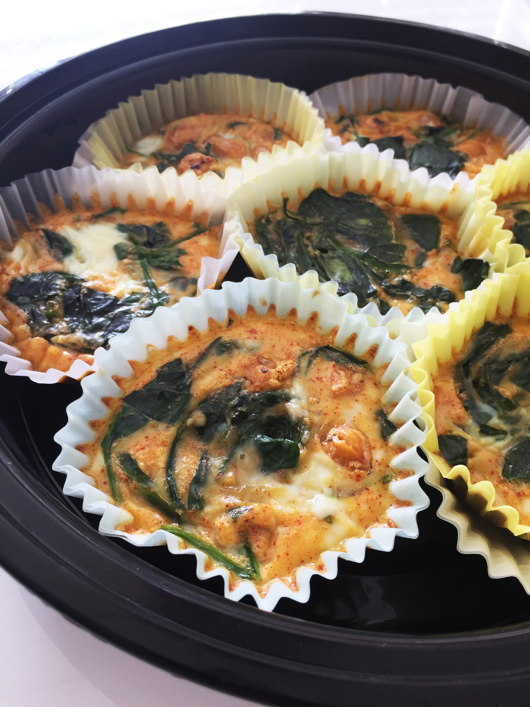
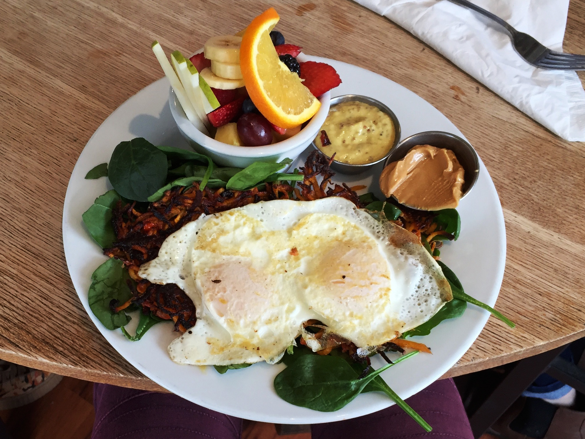
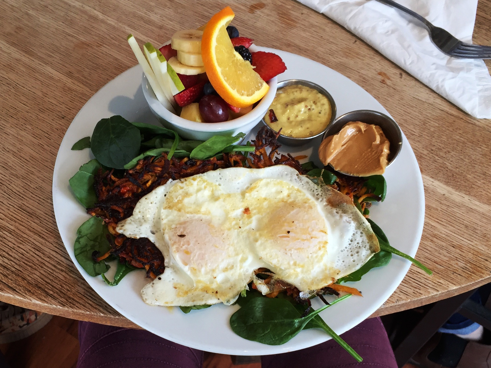
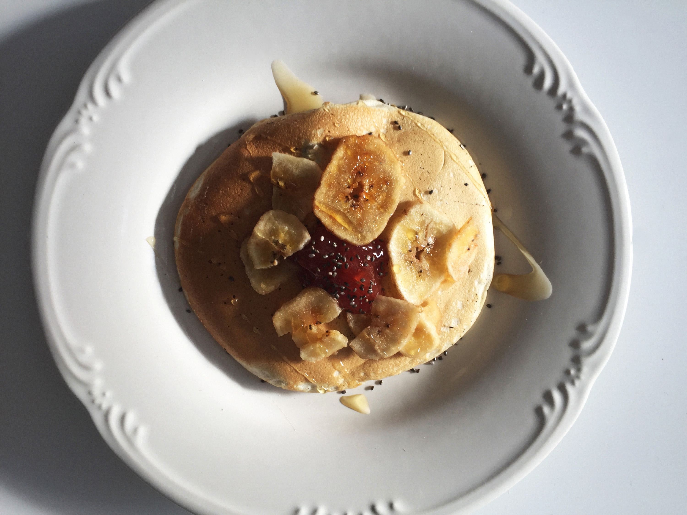
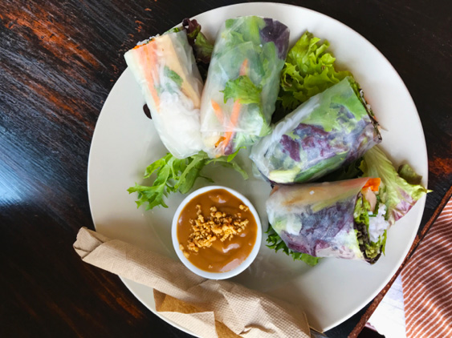
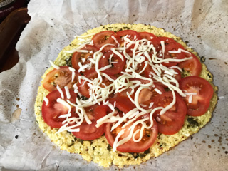
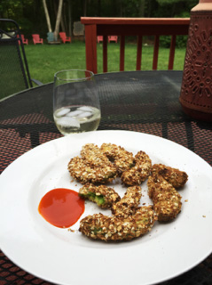
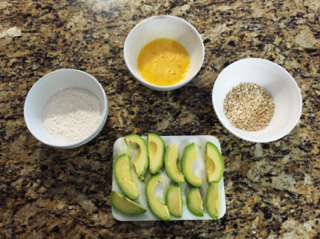

Advice
A major principle of my nutrition philosophy is that generic meal plans are a no go! Everyone’s body is different. Individualized mean plans are more successful becuase they are designed for you and only you. I don’t include meal plans on my site for this very reason. Instead I am sharing some of my favorite recipes!
Breakfast Lunch & Dinner SnacksBreakfast
Easy Omlette Cups
Ingredients
- 8 eggs
- 2 cups spinach
- 1 cup chickpeas (optional)
- low sodium seasoning
Directions
In a bowl put 8 eggs, 2 cups of spinach and a pinch of your choice of low sodium seasoning (I use cayenne), chickpeas (optional). Grease muffin pan and bake until egg is cooked through. Store in fridge for up to a week. These are very convient for those who don’t have time to cook breakfast. Grab, reheat, and go!
 

Eggs on Grilled Sweet Potato & Spinach
Ingredients
- 2 eggs
- 1 sweet potato
- 1 cup spinach
- 1 tbls olive oil
Directions
Preheat your grill on high. Next, slice your sweet potato and coat with olive oil. Place sweet potato slices on grill. While your sweet potato is grilling, prepare your eggs. I like mine poached but fried is just fine. Place the finished sweet potato on a bed of spinach and then place the eggs on the top. I like to add a side of fruit!
Banana, Strawberry Jam & Honey Protein Pancakes
Ingredients
- protein pancake mix
- 1 banana
- 1 tbls strawberry jam
- 1 tbls honey
- 1 tsp chia seeds
Directions
Prepare one protein pancake (you can find a variety of mixes at most grocery stores, I prefer True Nutrition). Slice the banana into bite-size medallions. Place strawberry jam in the center of the pancake and arrange the banana pieces around it. Drizzle the honey across the pancake and sprinkle the chia seeds on top!
Lunch & Dinner
Fresh Veggie Rolls
Ingredients
- 2 rice papers
- 1/4 large carrot
- 1/4 red pepper
- 1/4 cucumber
- 1 handful baby spinach
- sesame seeds
- 1 tbls peanut sauce
Directions
Begin by julienning the carrot, red pepper, and cucumber. Soak the rice paper in hot water until it is soft a flexible. Then place in work space and let sit for 30 seconds. Sprinkle sesame seeds onto the center of the rice paper. Then place your julienned vegetables in the center. Try to keep the vegetables neat with ample room on each side in order to fold. Take the flap of rice paper closest to you and wrap it over the vegetables, do not let go. Hold the flap down as you fold in the sides. Now you can roll the whole thing sealing the seam. Either drizzle your peanut sauce on top or use it to dip your rolls into!
Veggie Stir Fry with Cauliflower Rice
Ingredients
- 1 cauliflower head
- 1 bell pepper
- 1 diced green onion
- 1 cup thinly sliced cabbage
- 1 cup green beans
- 1 tbls sesame oil
- 1/2 cup roasted sliced almonds
- 1 tbls low-fat chili garlic sauce
Directions
First you need to grate the cauliflower head or shred it in a food processor, into rice size pieces. Set aside. Over medium heat, add the sesame oil and green beans to a pan. Cook for 4 minutes. Then add the rest of the vegetables and sautee for 4 minutes. Now add the cauliflower rice and almonds and stir. Cook until ingredients are mixed well and very hot. You may add protein, like chicken or shrimp!
Cauliflower Crust Pizza
Ingredients
- 1 cauliflower head
- 2 tomatoes
- 2 tbls pesto
- 1/2 cup low-fat mozzerella
- 1 tsp oregano
Directions
Preheat your oven to 400 degrees. Break the cauliflower up and pulse in food processor until fine. Then steam the fine cauliflower over boiling water and drain well. Let cool. Place cauliflower on baking sheet and mold into a circle. Bake for 20 minutes. Add pesto and spread over crust. Slice tomato and arrange over pesto. Then sprinkle the cheese and oregano. Bake for an additional 10 minutes.
Snacks
I pre-bag snacks and keep them in my cabinets so I can just grab and go. I am less tempted to snack on bad things or over eat because they are all portioned out for me. Almost like meal prep, but snack prep.
 Avocado Fries
Ingredients
- 1 egg
- 1 avocado
- 1/2 cup flour
- 1/2 cup oats
- sriracha
Directions
Preheat oven to 300 degrees. Slice avocado. Dip avocado slices into egg then dredge them in flour then oats. Place covered avocado slices on baking sheet and place in oven. Bake for 12 minutes. Dip into sriracha and enjoy!
Energy Balls
Ingredients
- oats
- chia seeds
- almond butter
- honey
- vanilla extract
- dark chocolate chips(optional)
Directions
For this recipe you have control over how much of each ingredient you want. I usually combine the ingredients in a bowl and mix until well blended. I then take a tablespoon scoop of the mixture and roll in my hands until its a ball.